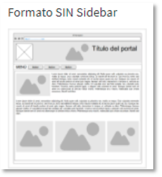

Portada
En la opción portada vamos a poder cambiar el contenido de la página de inicio del Portal. Es un editor sencillo y de uso parecido a Word.

También encontramos la opción de columna lateral y un desplegable. Esta columna es la que se mostrará en la parte derecha de la portada principal en la página de inicio. La forma de crear las columnas la veremos más tarde en la opción Columnas. Una vez hayamos realizado los cambios deberemos pulsar el botón PUBLICAR CAMBIOS.
En la imagen se puede apreciar el efecto en la portada de incluir o no la columna lateral:
